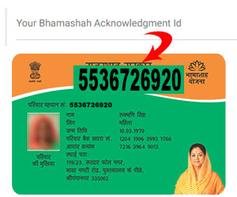

1. Click on the Login Button show in the top of the Page.
2. After clicking the button, Form will be open..
3. First enter the Bhamashah Acknowledgment Id .
4. Enter the password inside the text box.
5. Click to Login Button.
6. Click on the Submit Complaint button on the left sidebar.
7. Now you can able to Submit Your Complain